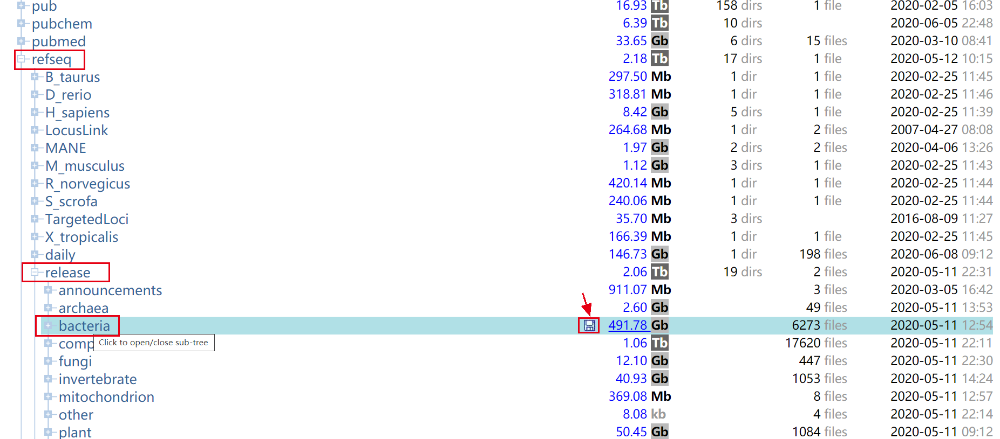

aspera下载NCBI数据
用aspera下载NCBI数据大概加速一万倍到十万倍emm，好那么我们默认已经装好了aspera…我把.aspera文件夹在根目录下
如果没安装的话，可以用conda，ascp属于工具包aspera-cli，顺带提一下prefetch的安装工具包sra-tools，但在国内基本就不考虑prefetch了。
1 | conda install -y -c hcc aspera-cli |
确认ascp已经添加至环境变量（可在我的博客里搜索export），它在这里
1 | ~/.aspera/connect/bin/ascp |
ascp语法
1 | ascp -i <asperaweb_id_dsa.openssh with path> -k1 -Tr –l100m |
-i<asperaweb_id_dsa.openssh with path> = fully qualified path & file name where
公共密钥asperaweb_id_dsa.openssh通常在etc子目录下
1 | ~/.aspera/connect/etc/asperaweb_id_dsa.openssh |
-Tto disable encryption-k 1enables resume of partial transfers-rrecursive copy-l(maximum bandwidth of request, try 100M and go up from there)
带宽可以从100Mbps到400Mbps，选择体验性能最佳的。
- <files(s) to transfer> = names of files to transfer (including path)
= location to store the downloaded data
以bacteria为例
https://www.ncbi.nlm.nih.gov/public/

点击跳出链接
ftp://ftp.ncbi.nlm.nih.gov/refseq/release/bacteria，
修改成anonftp@ftp.ncbi.nlm.nih.gov:/refseq/release/bacteria/
（mark blast nt anonftp@ftp.ncbi.nlm.nih.gov:/blast/db/FASTA/nt.gz）
计算节点node1未联网，可以在登录节点后台运行 (但比较容易中断，中断重新运行命令即可或用-k1 可以断点续传)
1 | nohup ascp -i ~/.aspera/connect/etc/asperaweb_id_dsa.openssh -k1 -Tr -l200m anonftp@ftp.ncbi.nlm.nih.gov:/refseq/release/bacteria/ /public/home/shared_lab/refseq_bacteria/bacteria_total & |
分组和解压
- 分组（刚下载下来都是压缩文件）
genomic: *.protein.faa.gz
transcript: *.rna.fna.gz，ribosomal RNA transcript
transcript_annotation: *.rna.gbff.gz
genomic_annotation: *.genomic.gbff.gz
protein_annotation: *.protein.gpff.gz
- 解压
以genomic文件为例
1 |
|
任务后台运行
关于登录节点任务放后台，如果一开始没有nohup Command [] &，如下操作
1 | ctrl+Z |
登录节点直接运行不通过slurm进行工作调度，现在通过sbatch递交作业可能就不存在这些问题了。